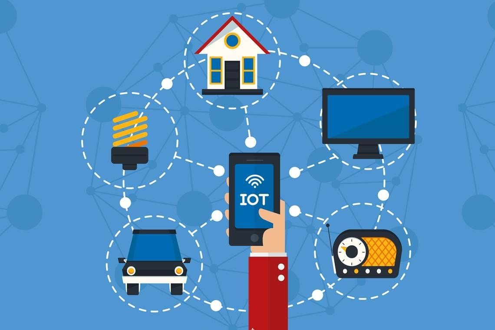

Mulher na Programação
As mulheres na programação têm enfrentado desafios relacionados à desigualdade de gênero na indústria de tecnologia. Apesar disso, muitas mulheres têm desempenhado papéis significativos e inovadores na programação, contribuindo para avanços tecnológicos. Iniciativas de inclusão e empoderamento estão trabalhando para aumentar a representatividade feminina na programação e criar um ambiente mais diversificado e equitativo. A diversidade de perspectivas é valiosa para a inovação e o sucesso na área de tecnologia. Portanto, é fundamental promover uma maior participação das mulheres na programação.
UX / UI

UI (User Interface) se concentra na aparência visual e interação de um produto ou aplicativo, projetando elementos como botões e layout para proporcionar uma experiência agradável aos usuários. UX (User Experience) abrange a experiência geral do usuário ao interagir com um produto, concentrando-se na usabilidade, acessibilidade e satisfação do usuário. Ambas são cruciais para o sucesso de produtos digitais, garantindo que sejam intuitivos e atendam às necessidades dos usuários, resultando em uma experiência positiva e eficaz.
IOT - Internet das Coisas
A Internet das Coisas (IoT) é uma rede de objetos físicos interconectados, como dispositivos, sensores e aparelhos, que coletam e compartilham dados pela internet. Esses dispositivos podem ser monitorados e controlados remotamente, automatizando tarefas e melhorando a eficiência em diversos setores, como saúde, agricultura, transporte e residências. A IoT promete transformar a maneira como interagimos com o mundo físico, possibilitando insights valiosos e novas oportunidades de negócios, mas também levanta preocupações de segurança e privacidade.